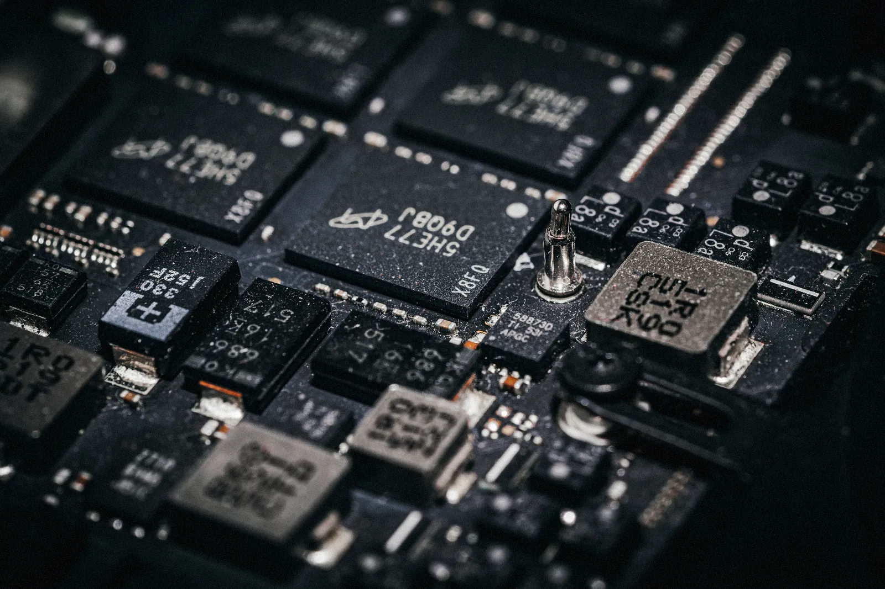
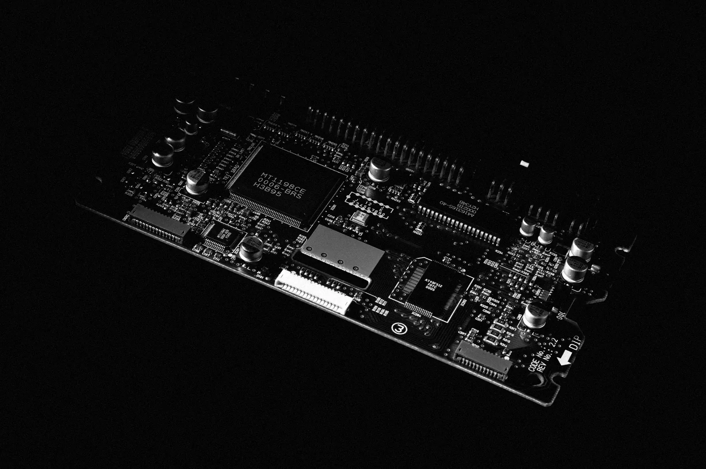
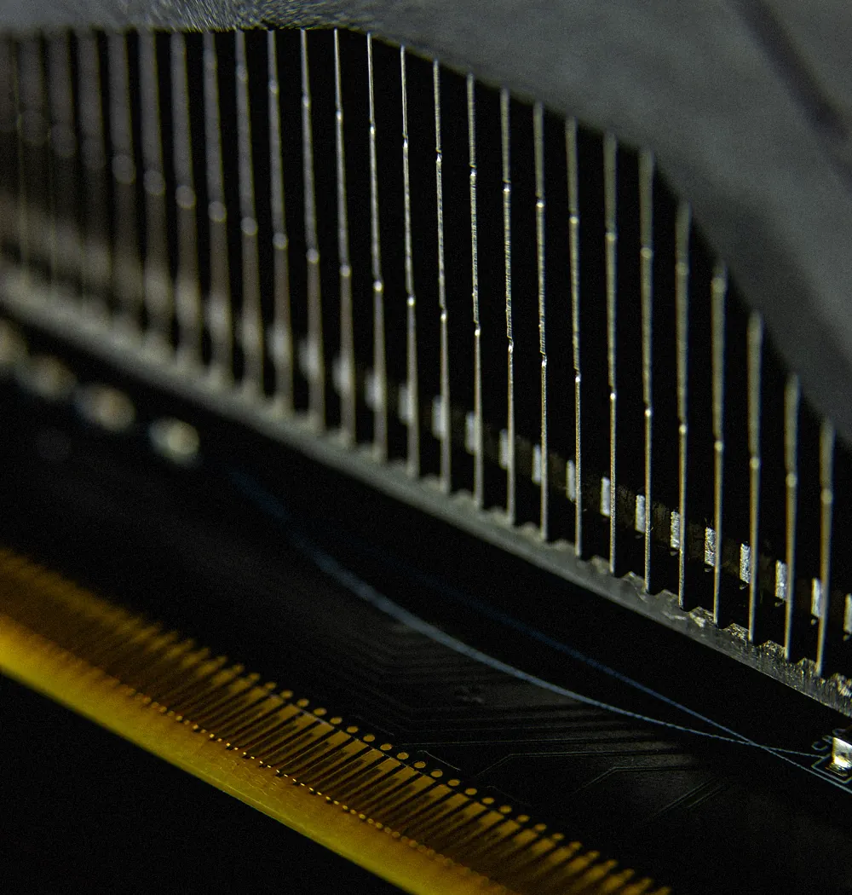

GX9900
The card REDLINE is built around. It isn't sold on its own — we'd rather it went out inside a machine that can feed it 600 W for three days straight.
Spec sheet
Against the fastest card on sale.
“Today” is the fastest consumer card you can buy in 2026: 32 GB of GDDR7, 1,792 GB/s, 575 W. The GX9900 is the next honest step past it, not a bigger number for its own sake — every figure below follows from the one before it.
- Memory
- 48 GB
- today 32 GB
- Bandwidth
- 2,048 GB/s
- today 1,792 GB/s
- FP32
- 128.8 TFLOPS
- today 104.8
- Board power
- 600 W
- today 575 W
| Figure | GX9900 | Today | Difference |
|---|---|---|---|
| Memory | 48 GB GDDR7 | 32 GB | +50% |
| Modules | 16 × 3 GB | 16 × 2 GB | |
| Bus width | 512-bit | 512-bit | |
| Data rate | 32 Gbps | 28 Gbps | |
| Bandwidth | 2,048 GB/s | 1,792 GB/s | +14% |
| Shader units | 24,576 | 21,760 | |
| Boost clock | 2.62 GHz | 2.41 GHz | |
| FP32 | 128.8 TFLOPS | 104.8 | +23% |
| Board power | 600 W | 575 W | +4% |
| Power in | 1 × 12V-2×6, rated 600 W | 1 × 12V-2×6 | |
| Idle | 31 W, fans stopped | ||
| Cooler | 3 × 110 mm fans, stopped below 50 °C | ||
| Outputs | 3 × DisplayPort 2.1, 1 × HDMI 2.1b | ||
| Interface | PCIe 5.0 ×16 |
Bandwidth is bus width × data rate ÷ 8. FP32 is shader units × 2 × boost clock.

Memory
48 GB is the number that matters.
A 70-billion-parameter language model at 4-bit is 35 GB of weights. Give it an 8,192-token context and its attention cache adds 2.68 GB. That's 37.7 GB on one card, with 10.3 GB to spare.
On a 32 GB card it doesn't fit. It spills into system memory and every token waits on the PCIe bus.

Power
600 W. Not a watt more.
One 12V-2×6 connector is rated for 600 W. The GX9900's board limit is set to exactly that, and the power supply is sized so the whole machine at full tilt — 900 W — uses 69% of its 1,300 W.
We could squeeze another few percent out past the cable's rating. Then the cable is the part that fails, and it fails at your desk.

Heat
Three fans that mostly don't turn.
Below 50 °C the fans stop. Most of a working day — writing, browsing, a render queued for later — the card never gets there.
At sustained full load it settles at 68 °C with the fans at 2,170 RPM — 68% of what they can do. The rest is headroom for a hot room.
See the fan curve